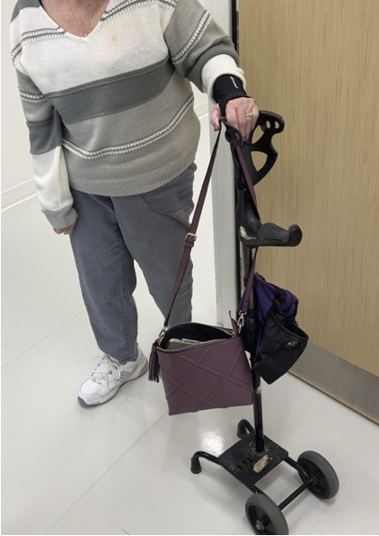
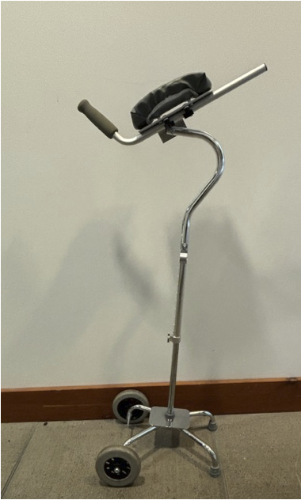
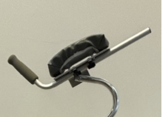
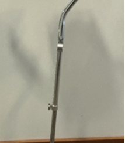
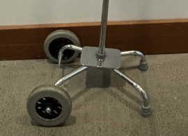
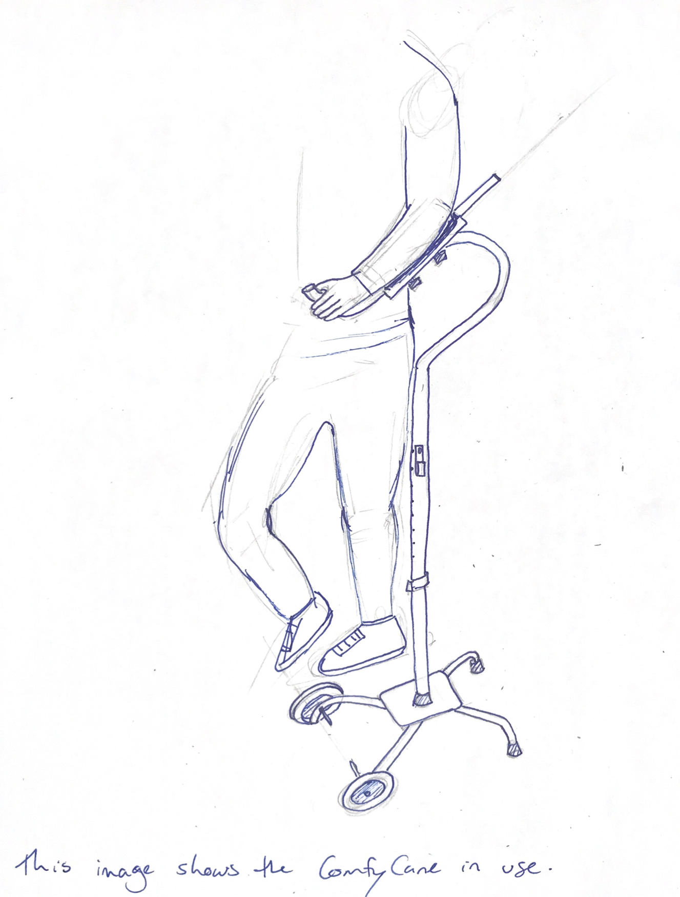

Fostering Independence in Old Age
My team's client for this project, Ms. Lafond, depended on her rolling quad cane to remain mobile and active in her day-to-day life. She used it to attend her grandchildren's sporting events, go grocery shopping, and more.
However, her existing cane failed to account for and adjust to Ms. Lafond’s decrease in height over the period of two years since it was custom-built by an orthoticist at Shirley Ryan AbilityLab.
My team’s goal was to provide Ms. Lafond with a new, durable prototype that improved her balance while increasing comfort when walking in indoor and outdoor environments.

Ms. Lafond with existing rolling quad cane
The New Quad Cane: ComfyCane
In response to these issues, my team developed the ComfyCane: an adjustable, lightweight cane with two front wheels and back stoppers, a hand grip, and an arm resting platform.
The base of the cane is composed of a lightweight frame with four individual legs. The front legs each have a wheel secured with a nut and bolt, and the back legs have rubber stoppers attached.
Because Ms. Lafond tended to use her old quad cane as a hook for carrying her purse, the ComfyCane also has a dedicated hook on its shaft for the same purpose.
A complete design report for the ComfyCane can be found here .

The ComfyCane
Components & Benefits
Arm Platform
Ms. Lafond’s left arm rests on the arm platform, which can be loosened and adjusted to a position she feels most comfortable with.

Adjustable Shaft
The shaft can be adjusted vertically through a hole and peg system, meaning Ms. Lafond's cane will fit her even if her stature continues to change.

Lightweight Aluminum Frame
The cane’s lightweight frame reduces the overall weight of the device, while also providing a stable foundation for the cane.

My Contributions
Design Sketches
Because the patient lived far from campus, I used sketching as a tool for portraying the final product in a realistic context.

Machining
Our prototype used a custom aluminum bracket to hold the arm rest onto the shaft, which I used a horizontal bandsaw and drill press to fabricate.
User Research
I traveled to and from the clinic at which Ms. Lafond receives treatment to learn about her needs, take measurements of her previous mobility aid, and build the ComfyCane to match her changing physique.